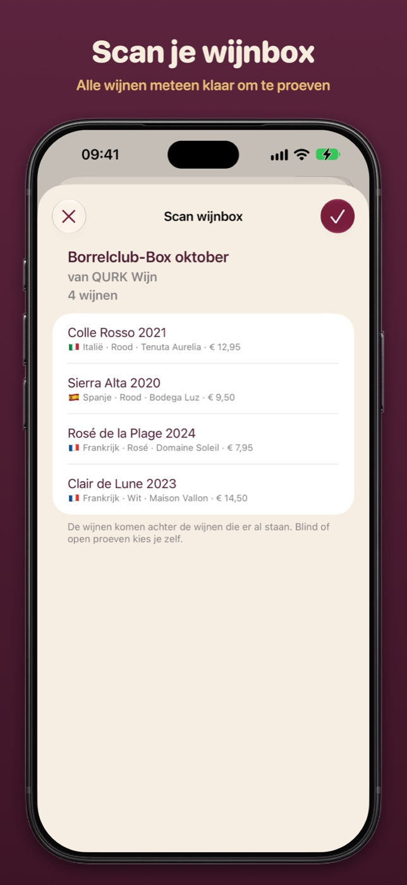
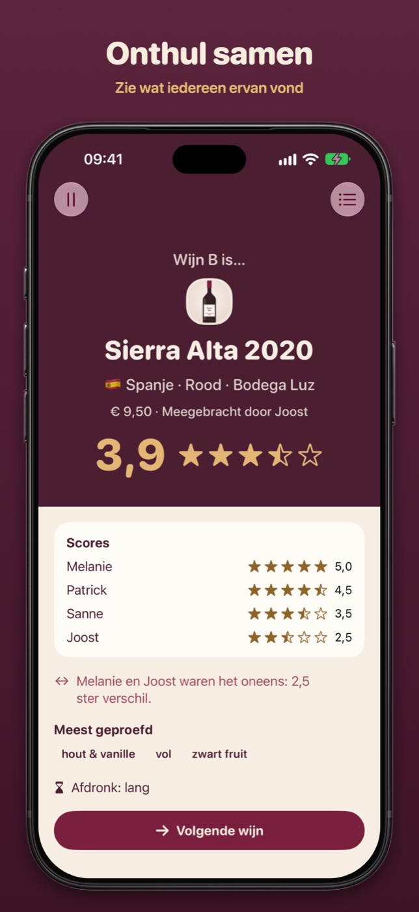
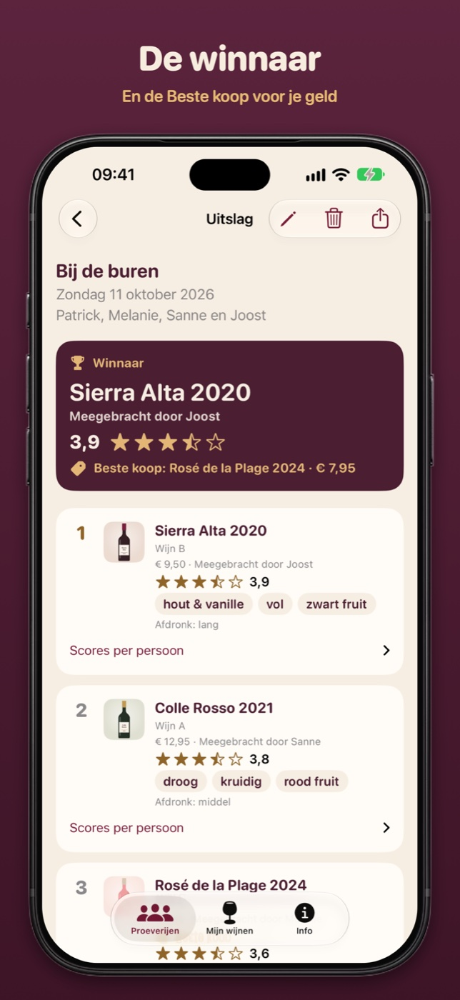
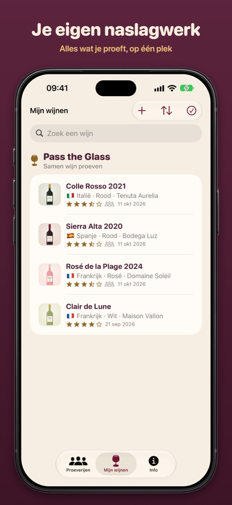

Pass the Glass
English
Pass the Glass
English
Pers
Beelden en het icoon van Pass the Glass, vrij te gebruiken bij een artikel over de app. Download ze los, of alles in één keer.
Beelden
Samen proeven en de wijnbox




Op de iPhone Duo
Icoon


Feiten
| App | Pass the Glass: samen wijn proeven. Eén telefoon gaat rond de tafel, iedereen geeft een eigen score, en aan het eind volgt de onthulling met de winnaar en de Beste koop. |
|---|---|
| Prijs | Gratis, zonder account, reclame of tracking |
| Werkt op | Elke iPhone met iOS 27 en elke iPad met iPadOS 27, ontworpen voor de iPhone Duo (tabletop, boek, open en dicht) |
| Wijnbox | Scan de QR-code op het kaartje met de camera van je iPhone of iPad: de app opent met alle wijnen klaar. Zonder iPhone of iPad proef je een wijnbox in de browser. Voor wijnhandels regelt Qurk Wijn de techniek: zo werkt het |
| Talen | Nederlands en Engels |
| Leeftijd | 18+, drink met mate |
| Maker | Qurk Wijn, Poeldijk |
| Links | App Store · passtheglass.app |
| Contact | Patrick Knoester, qurk.wijn@gmail.com |